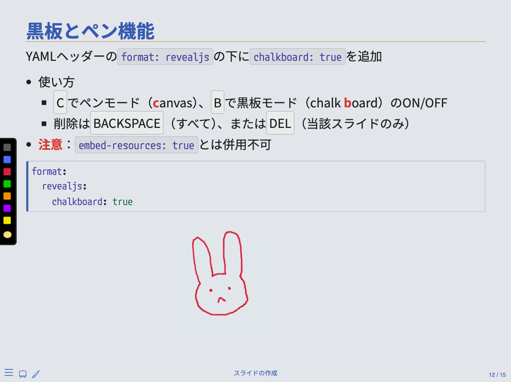

5/ スライドの作成
Quartoを使った研究成果と分析プロセスの共有
ロゴの入れ方
YAMLヘッダーのformat: revealjsの下にlogo: 画像のパスを追加
- 通常、ロゴは右下に入るが、CSS/SCSSファイルを修正することで調整可能
- 右下にロゴが入る場合、スライドのページ番号が見えなくなる
header-logo-link: URL\(\Rightarrow\) ロゴをクリックすると指定されたURLへ飛ぶ
format:
revealjs:
logo: my_logo.png
header-logo-link: https://www.jaysong.net/
画像の位置
Quartoのマークダウン記法では左、中央、右のみ（{fig-align=}）
{.absolute}で任意の位置に図を表示可能（top、left等で位置調節; 単位はpx）
{.absolute top=200 left=0}
{.absolute top=400 left=50 width="50px"}
{.absolute bottom=0 left=200 width="100px" height="300px"}
画像のスタック
:::{.r-stack}環境内に画像の埋め込み後、{.fragment}を追加
{}内にはfig-align、width等も使用可
Input:
::: {.r-stack}
{.fragment}
{.fragment}
{.fragment}
{.fragment}
:::Output:


画像の自動サイズ調整
の後に{.r-stretch}を付けると、スライドいっぱいに画像が拡大される
Input:
{.r-stretch}Output:
巨大R猫
黒板とペン機能
YAMLヘッダーのformat: revealjsの下にchalkboard: trueを追加
format:
revealjs:
chalkboard: true- CCでペンモード（canvas）、BBで黒板モード（chalkboard）のON/OFF
- 削除はBACKSPACEBACKSPACE（すべて）、またはDELDEL（当該スライドのみ）
- 注意：
embed-resources: trueとは併用不可
